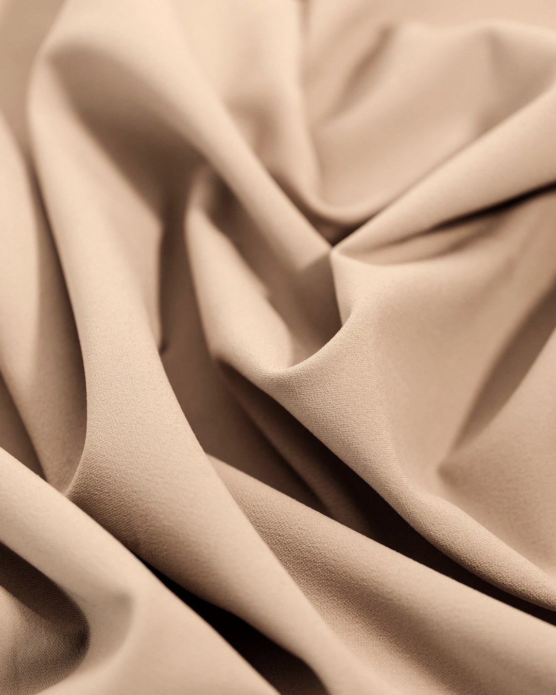
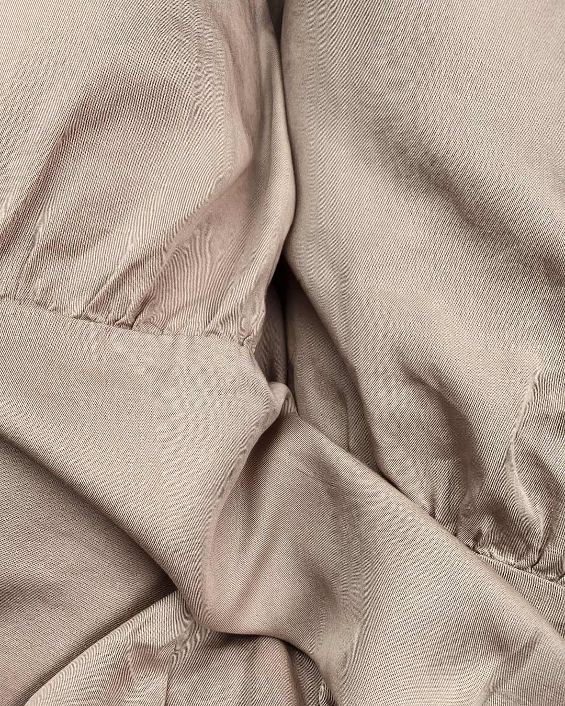
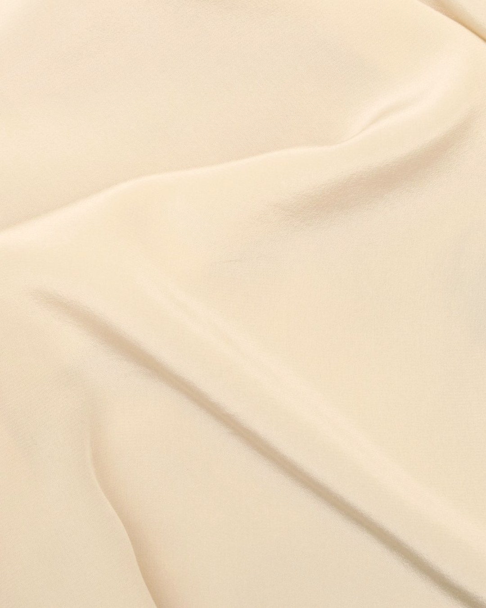
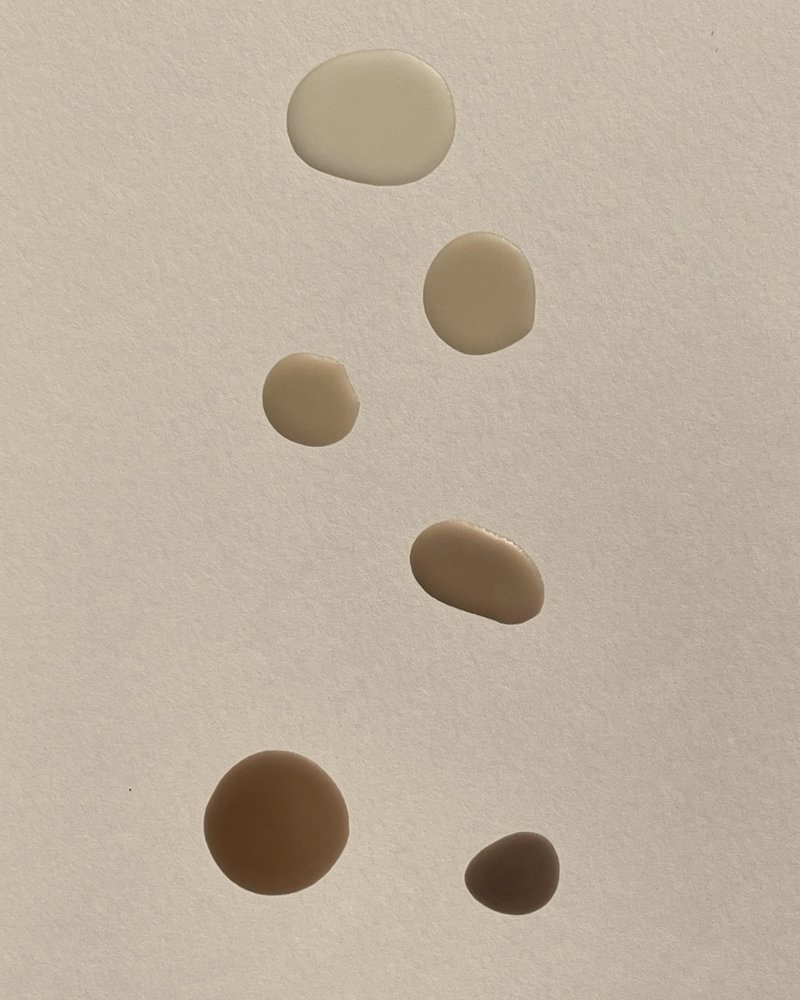
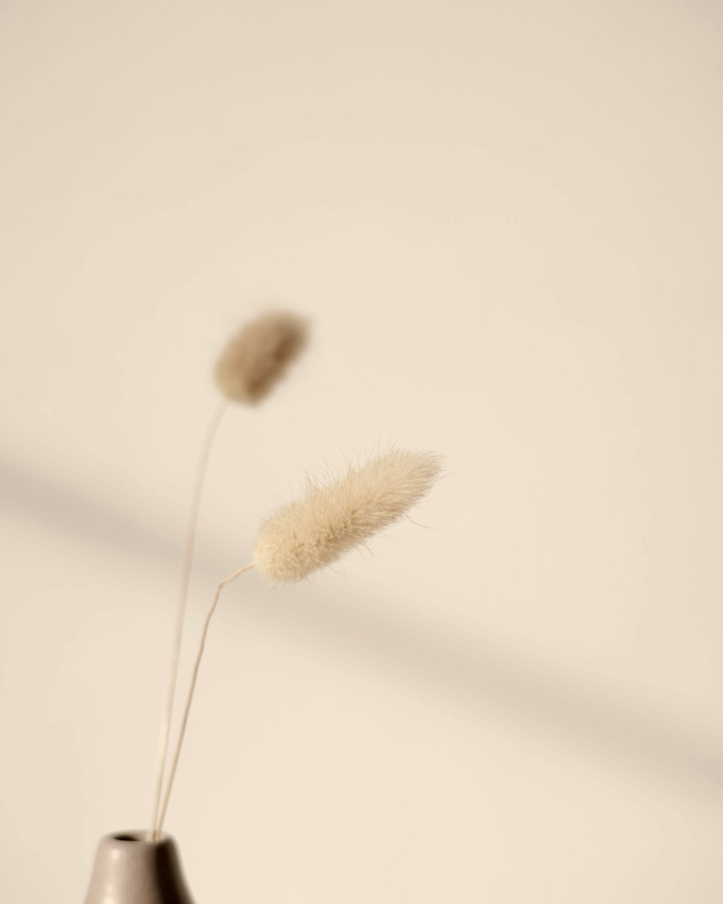
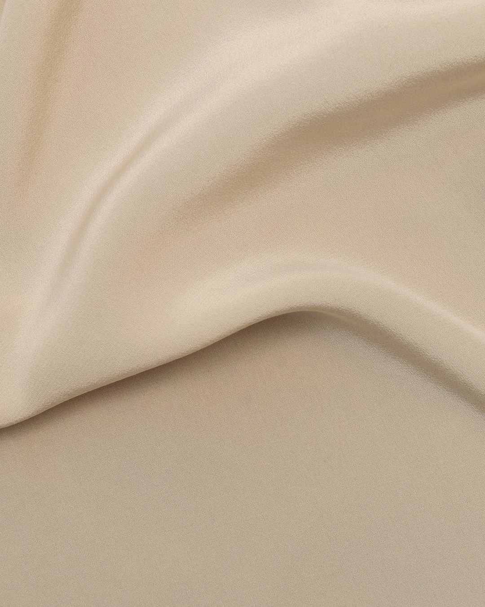

주름은 한 종류가 아닙니다.잔주름 · 표정주름 · 구조주름은 원인이 달라요.세수 직후 거울만 보면 어느 쪽인지 갈립니다.
내 주름이 어느 쪽인지부터

세수 직후 도드라졌다가 바르면 덜 보이면 이쪽이에요.눈가·입가에 가늘게 여러 줄로 생깁니다.이건 크림이 맡는 자리입니다.
미간·눈가처럼 표정을 풀어도 선이 남아 있으면 이쪽입니다.바르는 것으로는 접히는 힘 자체를 바꾸지 못해요.

팔자·볼처럼 면이 이동하면서 생기는 주름이에요.세 가지 중 가장 느리게 움직이는 쪽입니다.

세안 후 물기 있을 때 → 히알루론산 → 마지막에 크림으로 잠그기.이 자리는 순서만 지켜도 달라지는 쪽이에요.
찡그리는 습관, 눈 비비기, 그리고 자외선.이미 있는 선을 더 깊게 만드는 쪽입니다.여기서도 아침 자외선 차단이 제일 큽니다.

밤에 저농도 레티놀 주 2~3회, 아침엔 자외선 차단.기기나 시술을 얹을지는 그다음 판단이에요.

거울 앞에서 어느 쪽인지부터 보세요.저장해두고 아침저녁으로 확인하시면 됩니다.
당신이 푸르렀던 그 시절로
RE:BEAUTY